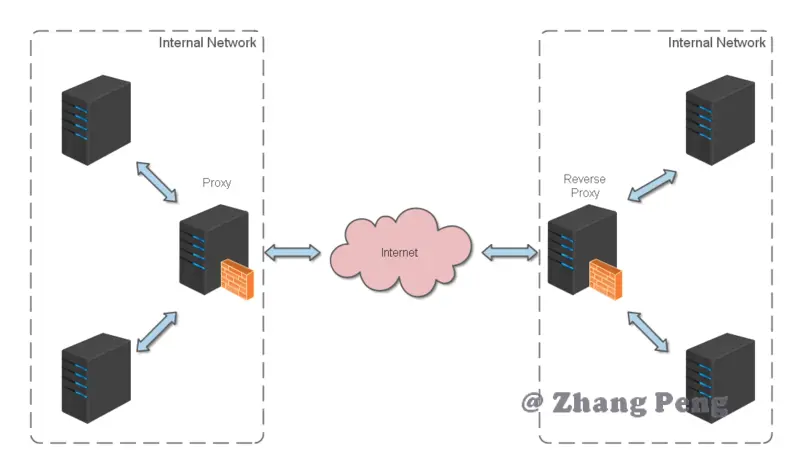
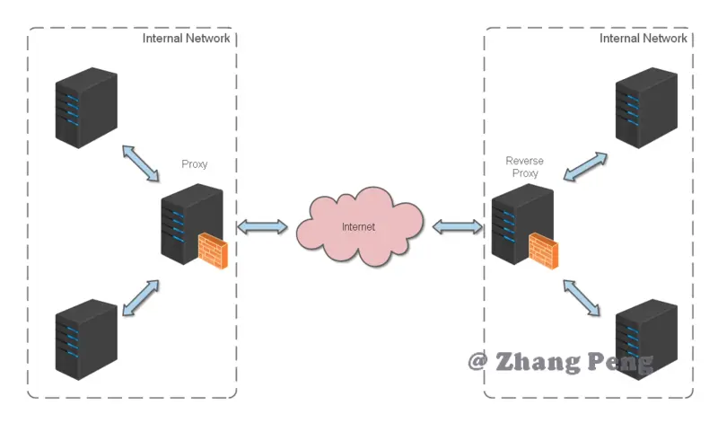

一、Nginx 简介 #
Nginx (engine x) 是一款轻量级的 Web 服务器 、反向代理服务器及电子邮件（IMAP/POP3）代理服务器。
前辈总结 #
-
nginx 是一款自由的、开源的、高性能的 HTTP 服务器和反向代理服务器；
-
同时也是一个 IMAP、POP3、SMTP 代理服务器；
-
nginx 可以作为一个 HTTP 服务器进行网站的发布处理，
-
另外 nginx 可以作为反向代理进行负载均衡的实现。


二、反向代理 #
反向代理（Reverse Proxy）方式是指以代理服务器来接受 internet 上的连接请求，然后将请求转发给内部网络上的服务器，并将从服务器上得到的结果返回给 internet 上请求连接的客户端，此时代理服务器对外就表现为一个反向代理服务器
 

要解释反向代理，我们就不得不先说下什么是代理？
那么什么是代理呢？
举个例子：代理 就如同生活中的专卖店～客人到 adidas 专卖店买了一双鞋，这个专卖店就是代理，被代理角色就是 adidas 厂家，目标角色就是用户。
那么什么是反向代理呢？
我们很多人应该都用过淘宝，要知道每天同时连接到淘宝网站的访问人数已经爆表，单个服务器远远不能满足人民日益增长的购买欲望了，此时就出现了一个大家耳熟能详的名词：分布式部署；
也就是通过部署多台服务器来解决访问人数限制的问题；淘宝网站中大部分功能也是直接使用 nginx 进行反向代理实现的，并且通过封装 nginx 和其他的组件之后起了个高大上的名字： Tengine
然后我们一起看个图：

上图表示的是全国各地的用户在淘宝客户端发出请求，经过了 Nginx 反向代理服务器，nginx 服务器接收到之后，按照一定的规则分发给了后端的业务处理服务器进行处理。
此时～请求的来源也就是客户端是明确的，但是请求具体由哪台服务器处理的并不明确了。Nginx 扮演的就是一个反向代理角色。
总结下：反向代理，主要用于服务器集群分布式部署的情况下，反向代理隐藏了服务器的信息
三、正向代理 #
一般聪明的人会有举一反三的思维，当你听到反向代理，也许就会想有没有正向代理呢？答案是有
举 个例子：如今的网络环境下，我们如果由于技术需要要去访问国外的某些网站，此时你会发现位于国外的某网站我们通过浏览器是没有办法访问的， 此时大家可能都会用一个操作 FQ（VPN）进行访问，FQ 的方式主要是找到一个可以访问国外网站的代理服务器，我 们将请求发送给代理服务器，代理服务器去访问国外的网站，然后将访问到的数据传递给我

上述这样的代理模式称为正向代理
正向代理最大的特点: 客户端非常明确要访问的服务器地址；服务器只清楚请求来自哪个代理服务器，而不清楚来自哪个具体的客户端；正向代理模式屏蔽或者隐藏了真实客户端信息
正向代理和反向代理一起使用就会像下图这样：

四、Nginx 负载均衡 #
想要知道什么是负载均衡，我们就得明白两个概念，什么是负载量？什么是均衡？
如图
上面客户端发送的、nginx 反向代理服务器接收到的请求数量，就是我们说的负载量
什么又是均衡呢？
请求数量按照一定的规则进行分发到不同的服务器处理的规则，就是一种均衡规则
所以负载均衡就是：将服务器接收到的请求按照规则分发的过程
负载均衡在实际项目操作过程中，有硬件负载均衡和软件负载均衡两种
硬件负载均衡也称为硬负载，特点：造价昂贵成本较高，数据的稳定性安全性好。
更多的公司考虑到成本原因，会选择使用软件负载均衡，软件负载均衡是利用现有的技术结合主机硬件实现的一种消息队列分发机制。
nginx 支持的负载均衡调度算法方式如下： #
- weight 轮询（默认）
接收到的请求按照顺序逐一分配到不同的后端服务器，即使在使用过程中，某一台后端服务器宕机，nginx 会自动将该服务器剔除出队列，请求受理情况不会受到任何影响。 这种方式下，可以给不同的后端服务器设置一个权重值（weight），用于调整不同的服务器上请求的分配率；权重数据越大，被分配到请求的几率越大；该权重值，主要是针对实际工作环境中不同的后端服务器硬件配置进行调整的。
- ip_hash
每个请求按照发起客户端的 ip 的 hash 结果进行匹配，这样的算法下一个固定 ip 地址的客户端总会访问到同一个后端服务器，这也在一定程度上解决了集群部署环境下 session 共享的问题
- fair
智能调整调度算法，动态的根据后端服务器的请求处理到响应的时间进行均衡分配，响应时间短处理效率高的服务器分配到请求的概率高，响应时间长处理效率低的服务器分配到的请求少；结合了前两者的优点的一种调度算法。但是需要注意的是 nginx 默认不支持 fair 算法，如果要使用这种调度算法，请安装 upstream_fair 模块
- url_hash
按照访问的 url 的 hash 结果分配请求，每个请求的 url 会指向后端固定的某个服务器，可以在 nginx 作为静态服务器的情况下提高缓存效率。同样要注意 nginx 默认不支持这种调度算法，要使用的话需要安装 nginx 的 hash 软件包
Nginx 另外一种实现负载均衡的方式 #
其实关于 Nginx 实现负载均衡，除了上面那种模式外，还有一种 Nginx 处理静态资源实现负载均衡的架构。
我们先来看看原始的企业架构：

这种原始架构的特点：
- 单节点
- 几乎无容灾
- 负载能力低
- 维护简单
所以为了改善这种架构，引入了一种动静分离的模式：

这种架构模式，使用 Nginx 来处理所有的 html,js,css 静态资源请求，这样 Tomcat 压力就会减轻一些，这样操作也能实现一定程度的负载均衡。
五、Nginx命令 #
nginx 的使用比较简单，就是几条命令
- 常用到的命令如下：
nginx -s stop 快速关闭Nginx，可能不保存相关信息，并迅速终止web服务。
nginx -s quit 平稳关闭Nginx，保存相关信息，有安排的结束web服务。
nginx -s reload 因改变了Nginx相关配置，需要重新加载配置而重载。
nginx -s reopen 重新打开日志文件。
nginx -c filename 为 Nginx 指定一个配置文件，来代替缺省的。
nginx -t 不运行，仅仅测试配置文件。nginx 将检查配置文件的语法的正确性，并尝试打开配置文件中所引用到的文件。
nginx -v 显示 nginx 的版本。
nginx -V 显示 nginx 的版本，编译器版本和配置参数。
六、Nginx 实战 #
我始终认为，各种开发工具的配置还是结合实战来讲述，会让人更易理解
Http 反向代理 #
我们先实现一个小目标：不考虑复杂的配置，仅仅是完成一个 http 反向代理。
nginx.conf 配置文件如下：
注：conf/nginx.conf 是 nginx 的默认配置文件。你也可以使用 nginx -c 指定你的配置文件
#运行用户
#user somebody;
#启动进程,通常设置成和cpu的数量相等
worker_processes 1;
#全局错误日志
error_log D:/Tools/nginx-1.10.1/logs/error.log;
error_log D:/Tools/nginx-1.10.1/logs/notice.log notice;
error_log D:/Tools/nginx-1.10.1/logs/info.log info;
#PID文件，记录当前启动的nginx的进程ID
pid D:/Tools/nginx-1.10.1/logs/nginx.pid;
#工作模式及连接数上限
events {
worker_connections 1024; #单个后台worker process进程的最大并发链接数
}
#设定http服务器，利用它的反向代理功能提供负载均衡支持
http {
#设定mime类型(邮件支持类型),类型由mime.types文件定义
include D:/Tools/nginx-1.10.1/conf/mime.types;
default_type application/octet-stream;
#设定日志
log_format main '[$remote_addr] - [$remote_user] [$time_local] "$request" '
'$status $body_bytes_sent "$http_referer" '
'"$http_user_agent" "$http_x_forwarded_for"';
access_log D:/Tools/nginx-1.10.1/logs/access.log main;
rewrite_log on;
#sendfile 指令指定 nginx 是否调用 sendfile 函数（zero copy 方式）来输出文件，对于普通应用，
#必须设为 on,如果用来进行下载等应用磁盘IO重负载应用，可设置为 off，以平衡磁盘与网络I/O处理速度，降低系统的uptime.
sendfile on;
#tcp_nopush on;
#连接超时时间
keepalive_timeout 120;
tcp_nodelay on;
#gzip压缩开关
#gzip on;
#设定实际的服务器列表
upstream zp_server1{
server 127.0.0.1:8089;
}
#HTTP服务器
server {
#监听80端口，80端口是知名端口号，用于HTTP协议
listen 80;
#定义使用www.xx.com访问
server_name www.helloworld.com;
#首页
index index.html
#指向webapp的目录
root D:\01_Workspace\Project\github\zp\SpringNotes\spring-security\spring-shiro\src\main\webapp;
#编码格式
charset utf-8;
#代理配置参数
proxy_connect_timeout 180;
proxy_send_timeout 180;
proxy_read_timeout 180;
proxy_set_header Host $host;
proxy_set_header X-Forwarder-For $remote_addr;
#反向代理的路径（和upstream绑定），location 后面设置映射的路径
location / {
proxy_pass http://zp_server1;
}
#静态文件，nginx自己处理
location ~ ^/(images|javascript|js|css|flash|media|static)/ {
root D:\01_Workspace\Project\github\zp\SpringNotes\spring-security\spring-shiro\src\main\webapp\views;
#过期30天，静态文件不怎么更新，过期可以设大一点，如果频繁更新，则可以设置得小一点。
expires 30d;
}
#设定查看Nginx状态的地址
location /NginxStatus {
stub_status on;
access_log on;
auth_basic "NginxStatus";
auth_basic_user_file conf/htpasswd;
}
#禁止访问 .htxxx 文件
location ~ /\.ht {
deny all;
}
#错误处理页面（可选择性配置）
#error_page 404 /404.html;
#error_page 500 502 503 504 /50x.html;
#location = /50x.html {
# root html;
#}
}
}
好了，让我们来试试吧：
启动 webapp，注意启动绑定的端口要和 nginx 中的 upstream 设置的端口保持一致。
更改 host：在 C:\Windows\System32\drivers\etc 目录下的 host 文件中添加一条 DNS 记录
127.0.0.1 www.helloworld.com
启动前文中 startup.bat 的命令
在浏览器中访问 www.helloworld.com，不出意外，已经可以访问了。
Https 反向代理 #
一些对安全性要求比较高的站点，可能会使用 HTTPS（一种使用 ssl 通信标准的安全 HTTP 协议）。
这里不科普 HTTP 协议和 SSL 标准。但是，使用 nginx 配置 https 需要知道几点：
HTTPS 的固定端口号是 443，不同于 HTTP 的 80 端口
SSL 标准需要引入安全证书，所以在 nginx.conf 中你需要指定证书和它对应的 key
其他和 http 反向代理基本一样，只是在 Server 部分配置有些不同。
#HTTP服务器
server {
#监听443端口。443为知名端口号，主要用于HTTPS协议
listen 443 ssl;
#定义使用www.xx.com访问
server_name www.helloworld.com;
#ssl证书文件位置(常见证书文件格式为：crt/pem)
ssl_certificate cert.pem;
#ssl证书key位置
ssl_certificate_key cert.key;
#ssl配置参数（选择性配置）
ssl_session_cache shared:SSL:1m;
ssl_session_timeout 5m;
#数字签名，此处使用MD5
ssl_ciphers HIGH:!aNULL:!MD5;
ssl_prefer_server_ciphers on;
location / {
root /root;
index index.html index.htm;
}
}
负载均衡 #
前面的例子中，代理仅仅指向一个服务器。
但是，网站在实际运营过程中，大部分都是以集群的方式运行，这时需要使用负载均衡来分流。
nginx 也可以实现简单的负载均衡功能。

假设这样一个应用场景：将应用部署在 192.168.1.11:80、192.168.1.12:80、192.168.1.13:80 三台 linux 环境的服务器上。网站域名叫 www.helloworld.com，公网 IP 为 192.168.1.11。在公网 IP 所在的服务器上部署 nginx，对所有请求做负载均衡处理（下面例子中使用的是加权轮询策略）。
nginx.conf 配置如下：
http {
#设定mime类型,类型由mime.type文件定义
include /etc/nginx/mime.types;
default_type application/octet-stream;
#设定日志格式
access_log /var/log/nginx/access.log;
#设定负载均衡的服务器列表
upstream load_balance_server {
#weigth参数表示权值，权值越高被分配到的几率越大
server 192.168.1.11:80 weight=5;
server 192.168.1.12:80 weight=1;
server 192.168.1.13:80 weight=6;
}
#HTTP服务器
server {
#侦听80端口
listen 80;
#定义使用www.xx.com访问
server_name www.helloworld.com;
#对所有请求进行负载均衡请求
location / {
root /root; #定义服务器的默认网站根目录位置
index index.html index.htm; #定义首页索引文件的名称
proxy_pass http://load_balance_server ;#请求转向load_balance_server 定义的服务器列表
#以下是一些反向代理的配置(可选择性配置)
#proxy_redirect off;
proxy_set_header Host $host;
proxy_set_header X-Real-IP $remote_addr;
#后端的Web服务器可以通过X-Forwarded-For获取用户真实IP
proxy_set_header X-Forwarded-For $remote_addr;
proxy_connect_timeout 90; #nginx跟后端服务器连接超时时间(代理连接超时)
proxy_send_timeout 90; #后端服务器数据回传时间(代理发送超时)
proxy_read_timeout 90; #连接成功后，后端服务器响应时间(代理接收超时)
proxy_buffer_size 4k; #设置代理服务器（nginx）保存用户头信息的缓冲区大小
proxy_buffers 4 32k; #proxy_buffers缓冲区，网页平均在32k以下的话，这样设置
proxy_busy_buffers_size 64k; #高负荷下缓冲大小（proxy_buffers*2）
proxy_temp_file_write_size 64k; #设定缓存文件夹大小，大于这个值，将从upstream服务器传
client_max_body_size 10m; #允许客户端请求的最大单文件字节数
client_body_buffer_size 128k; #缓冲区代理缓冲用户端请求的最大字节数
}
}
}
负载均衡策略
Nginx 提供了多种负载均衡策略，让我们来一一了解一下：
负载均衡策略在各种分布式系统中基本上原理一致，对于原理有兴趣，不妨参考 负载均衡
轮询 #
upstream bck_testing_01 {
# 默认所有服务器权重为 1
server 192.168.250.220:8080
server 192.168.250.221:8080
server 192.168.250.222:8080
}
加权轮询 #
upstream bck_testing_01 {
server 192.168.250.220:8080 weight=3
server 192.168.250.221:8080 # default weight=1
server 192.168.250.222:8080 # default weight=1
}
最少连接 #
upstream bck_testing_01 {
least_conn;
# with default weight for all (weight=1)
server 192.168.250.220:8080
server 192.168.250.221:8080
server 192.168.250.222:8080
}
加权最少连接 #
upstream bck_testing_01 {
least_conn;
server 192.168.250.220:8080 weight=3
server 192.168.250.221:8080 # default weight=1
server 192.168.250.222:8080 # default weight=1
}
IP Hash #
upstream bck_testing_01 {
ip_hash;
# with default weight for all (weight=1)
server 192.168.250.220:8080
server 192.168.250.221:8080
server 192.168.250.222:8080
}
普通 Hash #
upstream bck_testing_01 {
hash $request_uri;
# with default weight for all (weight=1)
server 192.168.250.220:8080
server 192.168.250.221:8080
server 192.168.250.222:8080
}
网站有多个 webapp 的配置 #
当一个网站功能越来越丰富时，往往需要将一些功能相对独立的模块剥离出来，独立维护。这样的话，通常，会有多个 webapp。
举个例子：假如 www.helloworld.com 站点有好几个 webapp，finance（金融）、product（产品）、admin（用户中心）。访问这些应用的方式通过上下文(context)来进行区分:
我们知道，http 的默认端口号是 80，如果在一台服务器上同时启动这 3 个 webapp 应用，都用 80 端口，肯定是不成的。所以，这三个应用需要分别绑定不同的端口号。
那么，问题来了，用户在实际访问 www.helloworld.com 站点时，访问不同 webapp，总不会还带着对应的端口号去访问吧。所以，你再次需要用到反向代理来做处理。
配置也不难，来看看怎么做吧：
http {
#此处省略一些基本配置
upstream product_server{
server www.helloworld.com:8081;
}
upstream admin_server{
server www.helloworld.com:8082;
}
upstream finance_server{
server www.helloworld.com:8083;
}
server {
#此处省略一些基本配置
#默认指向product的server
location / {
proxy_pass http://product_server;
}
location /product/{
proxy_pass http://product_server;
}
location /admin/ {
proxy_pass http://admin_server;
}
location /finance/ {
proxy_pass http://finance_server;
}
}
}
静态站点 #
有时候，我们需要配置静态站点(即 html 文件和一堆静态资源)。
举例来说：如果所有的静态资源都放在了 /app/dist 目录下，我们只需要在 nginx.conf 中指定首页以及这个站点的 host 即可。
配置如下：
worker_processes 1;
events {
worker_connections 1024;
}
http {
include mime.types;
default_type application/octet-stream;
sendfile on;
keepalive_timeout 65;
gzip on;
gzip_types text/plain application/x-javascript text/css application/xml text/javascript application/javascript image/jpeg image/gif image/png;
gzip_vary on;
server {
listen 80;
server_name static.zp.cn;
location / {
root /app/dist;
index index.html;
#转发任何请求到 index.html
}
}
}
然后，添加 HOST：
127.0.0.1 static.zp.cn
此时，在本地浏览器访问 static.zp.cn ，就可以访问静态站点了。
搭建文件服务器 #
有时候，团队需要归档一些数据或资料，那么文件服务器必不可少。使用 Nginx 可以非常快速便捷的搭建一个简易的文件服务。
Nginx 中的配置要点：
- 将 autoindex 开启可以显示目录，默认不开启。
- 将 autoindex_exact_size 开启可以显示文件的大小。
- 将 autoindex_localtime 开启可以显示文件的修改时间。
- root 用来设置开放为文件服务的根路径。
- charset 设置为 charset utf-8,gbk;，可以避免中文乱码问题（windows 服务器下设置后，依然乱码，本人暂时没有找到解决方法）。
一个最简化的配置如下：
autoindex on;# 显示目录
autoindex_exact_size on;# 显示文件大小
autoindex_localtime on;# 显示文件时间
server {
charset utf-8,gbk; # windows 服务器下设置后，依然乱码，暂时无解
listen 9050 default_server;
listen [::]:9050 default_server;
server_name _;
root /share/fs;
}
解决跨域 #
web 领域开发中，经常采用前后端分离模式。这种模式下，前端和后端分别是独立的 web 应用程序，例如：后端是 Java 程序，前端是 React 或 Vue 应用。
各自独立的 web app 在互相访问时，势必存在跨域问题。解决跨域问题一般有两种思路：
CORS #
在后端服务器设置 HTTP 响应头，把你需要允许访问的域名加入 Access-Control-Allow-Origin 中。
jsonp #
把后端根据请求，构造 json 数据，并返回，前端用 jsonp 跨域。
这两种思路，本文不展开讨论。
需要说明的是，nginx 根据第一种思路，也提供了一种解决跨域的解决方案。
举例：www.helloworld.com 网站是由一个前端 app ，一个后端 app 组成的。前端端口号为 9000， 后端端口号为 8080。
前端和后端如果使用 http 进行交互时，请求会被拒绝，因为存在跨域问题。来看看，nginx 是怎么解决的吧：
首先，在 enable-cors.conf 文件中设置 cors ：
# allow origin list
set $ACAO '*';
# set single origin
if ($http_origin ~* (www.helloworld.com)$) {
set $ACAO $http_origin;
}
if ($cors = "trueget") {
add_header 'Access-Control-Allow-Origin' "$http_origin";
add_header 'Access-Control-Allow-Credentials' 'true';
add_header 'Access-Control-Allow-Methods' 'GET, POST, OPTIONS';
add_header 'Access-Control-Allow-Headers' 'DNT,X-Mx-ReqToken,Keep-Alive,User-Agent,X-Requested-With,If-Modified-Since,Cache-Control,Content-Type';
}
if ($request_method = 'OPTIONS') {
set $cors "${cors}options";
}
if ($request_method = 'GET') {
set $cors "${cors}get";
}
if ($request_method = 'POST') {
set $cors "${cors}post";
}
到此，就完成了。
接下来，在你的服务器中 include enable-cors.conf 来引入跨域配置：
七:其他 #
反向代理 #
- case1 基础
#HTTP服务器
server {
#监听80端口，80端口是知名端口号，用于HTTP协议
listen 80;
#定义使用www.xx.com访问
server_name www.test_hello.com;
#编码格式
charset utf-8;
#代理配置参数
proxy_connect_timeout 180;
proxy_send_timeout 180;
proxy_read_timeout 180;
proxy_set_header Host $host;
proxy_set_header X-Forwarder-For $remote_addr;
#反向代理的路径（和upstream绑定），location 后面设置映射的路径
location / {
proxy_pass http://127.0.0.1:8080;
}
}
windows host修改
C:\Windows\System32\drivers\etc\hosts
127.0.0.1 www.test_hello.com
浏览器中输入 www.test_hello.com 被映射为 127.0.0.1 并且被nginx监听到然后请求转发到了http://127.0.0.1:8080
- case2 别名方式
#设定实际的服务器列表
upstream zp_server1{
server 127.0.0.1:8080 ;
}
#HTTP服务器
server {
#监听80端口，80端口是知名端口号，用于HTTP协议
listen 80;
#定义使用www.xx.com访问
server_name www.test_hello.com;
#编码格式
charset utf-8;
#代理配置参数
proxy_connect_timeout 180;
proxy_send_timeout 180;
proxy_read_timeout 180;
proxy_set_header Host $host;
proxy_set_header X-Forwarder-For $remote_addr;
#反向代理的路径（和upstream绑定），location 后面设置映射的路径
location / {
proxy_pass http://zp_server1;
}
}
windows host修改
C:\Windows\System32\drivers\etc\hosts
127.0.0.1 www.test_hello.com
- case3 实现负载均衡
upstream load_balance_server {
ip_hash;
#weigth参数表示权值，权值越高被分配到的几率越大
server 192.168.1.11:80 weight=5;
server 192.168.1.12:80 weight=1;
server 192.168.1.13:80 weight=6;
}
ip_hash 属于一种实际上有好几种类型